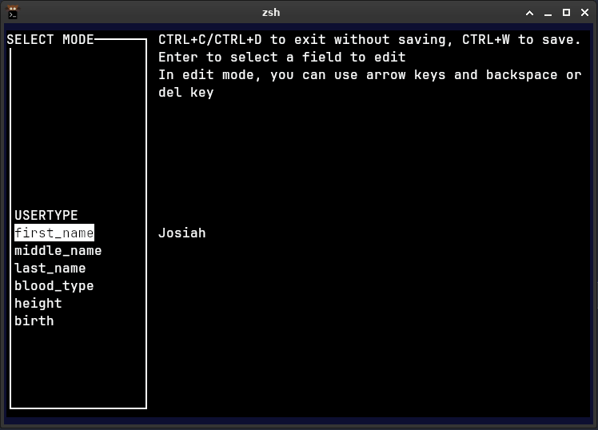
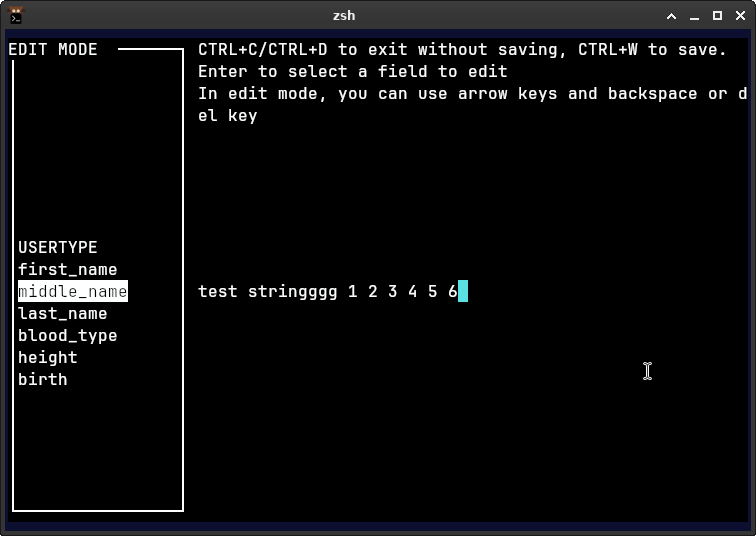
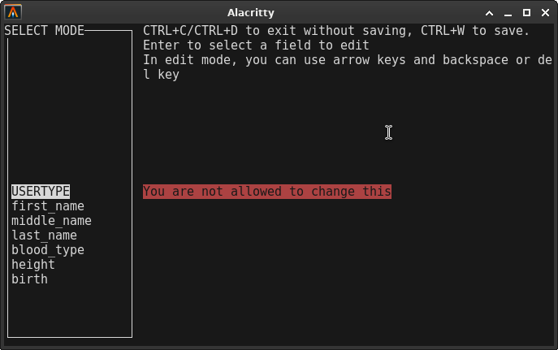

|
Hospital Management System
|
|
Hospital Management System
|
We make use of the ncurses library to create TUIs, in contrast to our previous python project where we had to manually deal with ANSI escape keys.
This doesn't mean ncurses will abstract everything, it still requires knowledge of the terminal and how ncurses works.
The proper pattern is to use an init function (ncurses handles state externally, so we don't worry about scope), call refresh() every loop, and call clear() if doing anything that leaves characters in the terminal buffer (i.e. backspacing in text editor, the characters were never explicitly cleared)
ncurses on Windows will not see CTRL+Key until you press another key, unless the render loop is non-blocking and has a timeout.
non-blocking meaning will keep looping even though the user hasn't pressed a key.
in other words, nodelay(1) and wtimeout(16) makes getch() return -1 when there is nothing in stdin
We wanted to have custom behaviour with CTRL+C such that it wouldnt outright quit the program, and instead cancel the current operation.
This means we call raw() in ncurses_init() so we get to handle CTRL+Key events ourselves.
Setting a terminal to raw mode/cbreak means that every single character is immediately sent to stdin, raw mode makes the terminal let characters through wihtout sending signals (e.g. SIGINT from CTRL+C)
In contrast to the default cooked mode, it only sends characters to stdin once you send newline (enter)
so the windows API equivalent to raw mode and noecho would be:
On Linux, when you press CTRL+Q, the PTY translates it to a single byte 0x11 and stuffs it in stdin. It's already there when ncurses calls read() on stdin
On Windows, input goes through the event queue of ReadConsoleInput(https://learn.microsoft.com/en-us/windows/console/readconsoleinput), which deal with INPUT_RECORD structs. keyboard events with flags for modifier keys (CTRL, SHIFT, ALT). ncurses on Windows has to:
When the render loop is blocking or the timeout is 0, getch() will check its internal buffer and find nothing, because it doesn't have time at all to process the CTRL+key so the INPUT_RECORD is still sitting in Window's event queue, and getch() will still return -1. That is until you press another key and it suddenly comes through.
Also cmd and Powershell doesn't send KEY_RESIZE to the program, so we have to use the windows API and poll for the terminal size ourselves.
check_console_window_resize_event()
simple_select() This section will explain things that will be skimmed through / abstracted in later sections.
config_editor is a function that provides a TUI for editing key: value or key=value files.
It shows and scrolls the keys on the left side, while showing the value on the right side.
When pressing enter, the user can switch between EDIT mode and SELECT mode.
During EDIT mode, the user can use their keyboard to edit the value.


Also you can pass a string array to prevent users from changing some fields

KEY_RESIZE is not handled after the first switch case, so it effectively restarts the loop and refreshes the menu
Flowchart for config_editor
We decided to write our own text editor to reduce the amount of dependencies HMS uses. (We could just use nano or vim, but those don't exist for Windows.)
It serves as a basic terminal pager (although it loads the entire file) and is a very primitive text editor.
Like nano, the functions loads the file by parsing each line as a node in a doubly linked list, which made insertions much faster (O(1)) and more practical to write.
see:
Features: